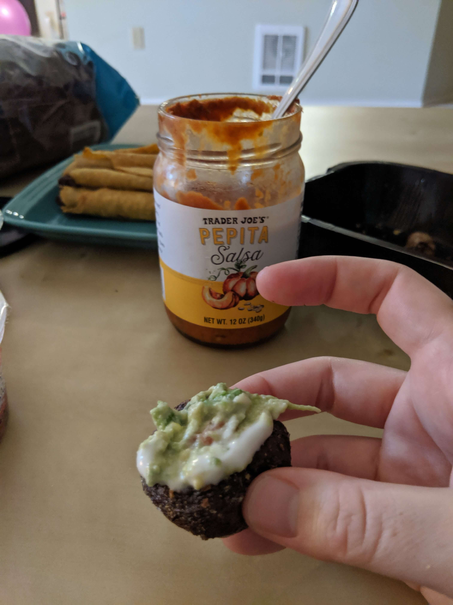

Guac-Stuffed Mushrooms
Everyone loves stuffed mushrooms! These are even easier and faster to make because you stuff them after cooking.
Ingredients:
- mushrooms
- guacamole / avocado
- hot sauce or salsa
- vegan sour cream (or non-dairy, unsweetend yogurt or vegan ranch)
- Break the stem out of the mushrooms (leavin the hole)
- Place in airfryer and cook for 10-15 minutes around 360F
- Shake/stir the mushrooms every 3-5 minutes while getting guacamole and creme topping ready
Be careful not to get burned by the hot water escaping the mushrooms! - Once the mushrooms are done, wait for them to cool and then
- Stuff them with the guacamole or avocado mix , top with your favorite sour cream-style sauce and salsa!